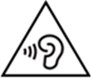

Health and Safety Information
Please read and observe the health and safety information. Failure to do so could result in injury or damage. Adults should supervise the use of this product by children.
Please Note
In this document, the terms "Nintendo Switch", "console" and "Nintendo Switch console" also refer to the Nintendo Switch Lite system, unless otherwise stated. Any references to the Joy-Con™ controllers, to multiple batteries and to the vibration feature do not apply to the Nintendo Switch Lite system.
WARNING – Seizures
Some people (about 1 in 4000) may have seizures or blackouts triggered by light flashes or patterns, and this may occur while they are watching TV or playing video games, even if they have never had a seizure before. Anyone who has ever experienced seizures, loss of awareness or any other symptom linked to an epileptic condition should consult a doctor before playing video games.
Stop playing and consult a doctor if you have any unusual symptoms, such as: convulsions, eye or muscle twitching, loss of awareness, altered vision, involuntary movements, or disorientation.
To reduce the likelihood of a seizure when playing video games:
- Do not play if you are tired or need sleep.
- Play in a well-lit room.
- Take a break of 10 to 15 minutes every hour.
WARNING – Eye Strain, Motion Sickness and Repetitive Motion Injuries
Avoid excessively long play sessions.
Take a break of 10 to 15 minutes every hour, even if you don’t think you need it.
Stop playing if you experience any of these symptoms:
- If your eyes become tired or sore while playing, or if you feel dizzy, nauseated or tired;
- If your hands, wrists, or arms become tired or sore while playing, or if you feel tingling, numbness, burning or stiffness or other discomfort.
If any of these symptoms persist, consult a doctor.
WARNING – Pregnancy and Medical Conditions
Consult a doctor before playing games that may require physical activity if:
- You are pregnant;
- You suffer from heart, respiratory, back, joint or orthopaedic problems;
- You have high blood pressure;
- Your doctor has instructed you to restrict your physical activity;
- You have any other medical condition that may be aggravated by physical activity.
WARNING - Batteries
Stop using if a battery is leaking.
If battery fluid comes into contact with your eyes, immediately rinse your eyes with plenty of water and consult a doctor. If any fluid leaks on your hands, wash them thoroughly with water. Carefully wipe the fluid from the exterior of the device with a cloth.
The console and Joy-Con controllers each contain a rechargeable lithium-ion battery. Do not replace the batteries yourself. The batteries must be removed and replaced by a qualified professional. Please contact Nintendo Customer Support for more information.
WARNING - Electrical Safety
Observe the following precautions when using the AC adapter:
- Use only the AC adapter (HAC-002) to charge the console.
- Connect the AC adapter to the correct voltage (AC 100 – 240V).
- Do not use voltage transformers or plugs that deliver reduced amounts of electricity.
- The AC adapter should be plugged into a nearby, easily accessible socket.
- The AC adapter is for indoor use only.
- If you hear a strange noise, see smoke or smell something strange, unplug the AC adapter from the socket and contact Nintendo Customer Support.
Do not expose devices to fire, microwaves, high temperatures or direct sunlight.
Do not let devices come into contact with liquid and do not use them with wet or oily hands.
If liquid gets inside, stop using and contact Nintendo Customer Support.
Do not expose devices to excessive force.
Do not pull on cables and do not twist them too tightly.
Do not touch device connectors with your fingers or metal objects.
Do not touch the AC adapter or connected devices while charging during a thunderstorm.
Use only compatible accessories that have been approved for use in your country.
Do not disassemble or try to repair devices.
If devices are damaged, stop using them and contact Nintendo Customer Support. Do not touch damaged areas. Avoid contact with any leaking fluid.
WARNING - General
Keep this console, its accessories and packaging materials away from young children and pets.
Small parts such as game cards, microSD cards and packaging items may be accidentally ingested. The cables can coil around the neck.
Do not use this console within 15 centimetres of a cardiac pacemaker while using wireless communication.
If you have a pacemaker or other implanted medical device, first consult a doctor.
Wireless communication may not be allowed in certain places such as aeroplanes or hospitals.
Please follow respective regulations.

Do not use headphones to listen at high volume levels for long periods due to high sound pressure and hearing damage risk.Keep the volume at a level at which you can hear your surroundings. Consult a doctor if you experience symptoms such as buzzing in your ears.
Stop playing if you are holding the console or the controllers while charging and they become too hot, as this may lead to skin burns.
Persons who have an injury or disorder involving their fingers, hands or arms should not use the vibration feature.
CAREFUL USAGE
Do not place the console in humid areas or areas where the temperature can suddenly change.
If condensation forms, turn the power off and wait until the water droplets have evaporated.
Do not use in dusty or smoky areas.
Do not cover the console's air intakes or vents while playing to avoid overheating.
If devices become dirty, wipe them with a soft, dry cloth.
Avoid using alcohol, thinner or other solvents.
Be aware of your surroundings while playing.
Make sure to charge the built-in batteries at least once every six months.
If the batteries are not used for an extended period of time, it may become impossible to charge them.
To minimise the risk of image retention or screen burn-in occurring on the Nintendo Switch console OLED screen (HEG-001 only), do not turn off the console's default sleep mode settings and take care to not display the same image on the OLED screen for extended periods of time.
The Nintendo Switch console OLED screen (HEG-001 only) is covered with a film layer designed to prevent fragments scattering in the event of damage. Do not peel it off.
HEG-OSAFE-EUR-1